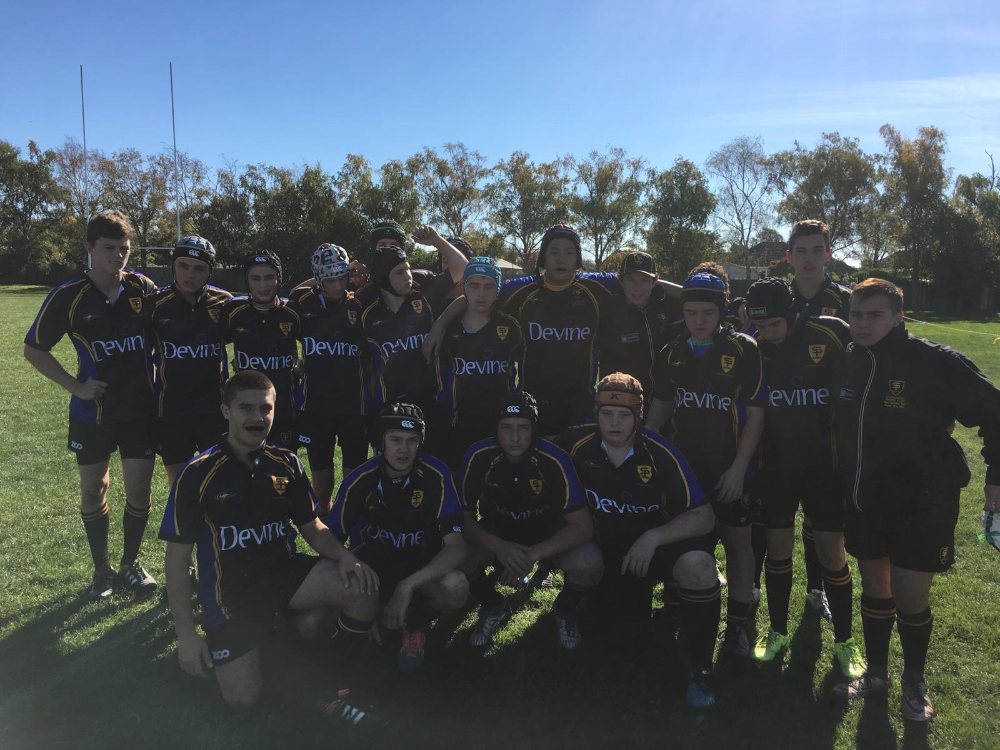

Interests
Some of my main interests are playing games on the computer and logging crazy amount of hours on steam but also putting my brain to the test through certain areas of knowdlege such as IST, Engineering and Maths.
I like to Engineering and IST as they make me think of other ways to complete certain goals, I like having this test.
I like to play sport, I play Rubgy and Baseball. Club Rubgy has taken me to many places normally out west or up North to the Northern Suburbs. Rubgy has also taken me to New Zealand, this was lots of fun dispite being beaten heavily.
